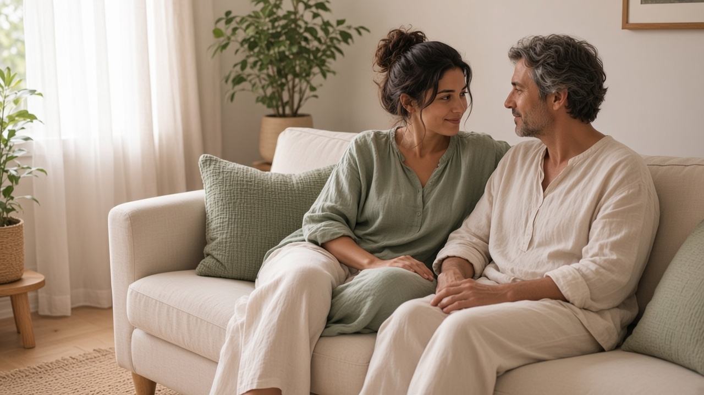
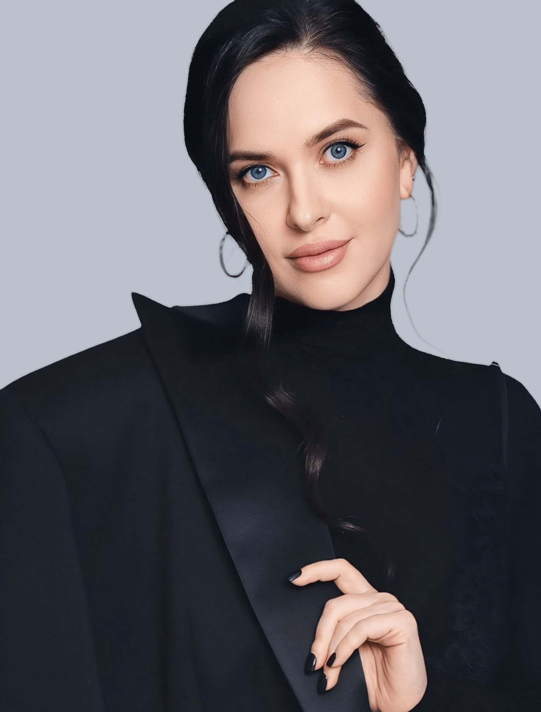

о здоровых отношениях
Как построить и сохранить счастливые отношения
Для тех, кто свободен и тех, кто уже в отношениях
работы
Узнаёте себя?
Приходите на вебинар, если хотите:
- 01
Отличить холод от жестокости, если уже повесили ярлык «нарцисс»
- 02
Понять, почему «он не бьёт» ещё не значит, что дома здорово
- 03
Не срывать завтрашний разговор в «ты всегда»
- 04
Увидеть, что происходит, если годы живёте соседями, а на людях «у нас нормально»
- 05
Найти слова, если психолог уже был, а кухня та же
- 06
Слышать себя после звонка родных и после крика с ребёнком
- 07
Перестать решать, что с собой что-то не так, после тяжёлых отношений
Разговор об отношениях без универсальных рецептов.
Прийти на вебинарПо существу
Программа вебинара
О том, как заметить важное, сохранить здоровые отношения или принять решение о расставании.
- 01 / 06
Красные флаги в отношениях

- 02 / 06
Когда ни в коем случае нельзя идти на семейную психотерапию
- 03 / 06
Когда отношения лучше завершить
- 04 / 06
Как правильно расставаться
- 05 / 06
Как сохранить отношения и сделать их более здоровыми
- 06 / 06
Как склеить «разбитую чашу» и восстановить утраченное доверие в отношениях

Зайцева
Кто проводит эфир
Знание, опыт, практика.
Вебинар проводит Наталья Зайцева
- 01Врач-психотерапевт, психиатр с 20-летним опытом работы
- 02Придерживается принципов доказательной медицины
- 03Работает в когнитивно-поведенческом направлении психотерапии: CBT, REBT, DBT
- 04Помогла более 5000 человек справиться с тревогой, нормализовать сон, улучшить отношения на своих онлайн-курсах
- 05Автор блогов в соцсетях с аудиторией более 150 тыс человек
Два важных вопроса
Приходите на вебинар, чтобы разобраться:
Как сохранить отношения и сделать их более здоровыми
Когда отношения лучше завершить и как правильно расставаться
Решение начинается с понимания.
Пять ориентиров
От первых сигналов — к ясности.
- Красные флагиЧто важно замечать
- Семейная терапияКогда она не подходит
- Решение об отношенияхКогда их лучше завершить
- Расставание или сохранениеКакие вопросы важно себе задать
- ДовериеЧто помогает его восстанавливать
Участие бесплатно
После регистрации вы попадёте в закрытый Telegram-канал.
Там получите ссылку на эфир и эксклюзивные подкасты от Натальи Зайцевой.
Зарегистрироватьсяи эксклюзивные подкастыНЗ.